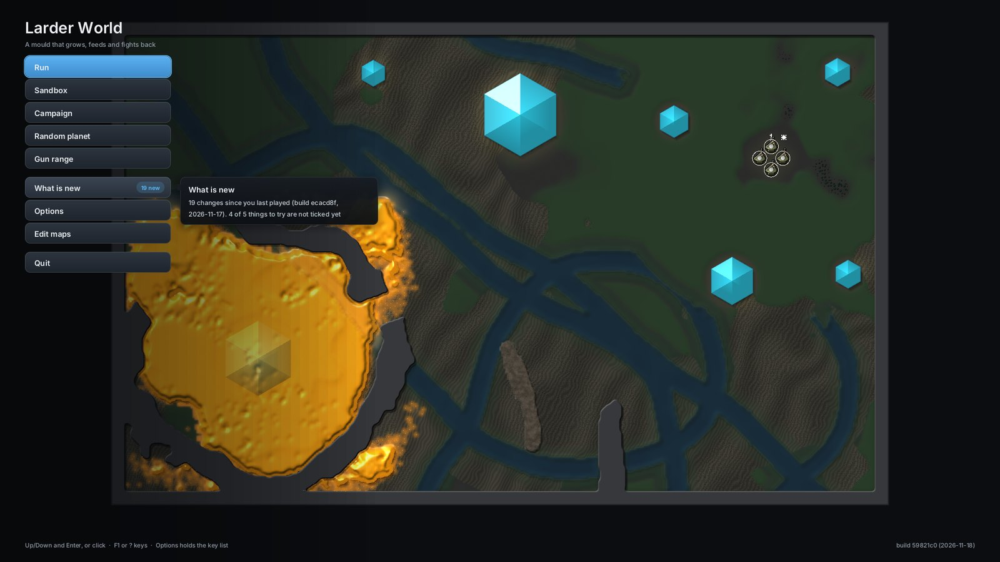
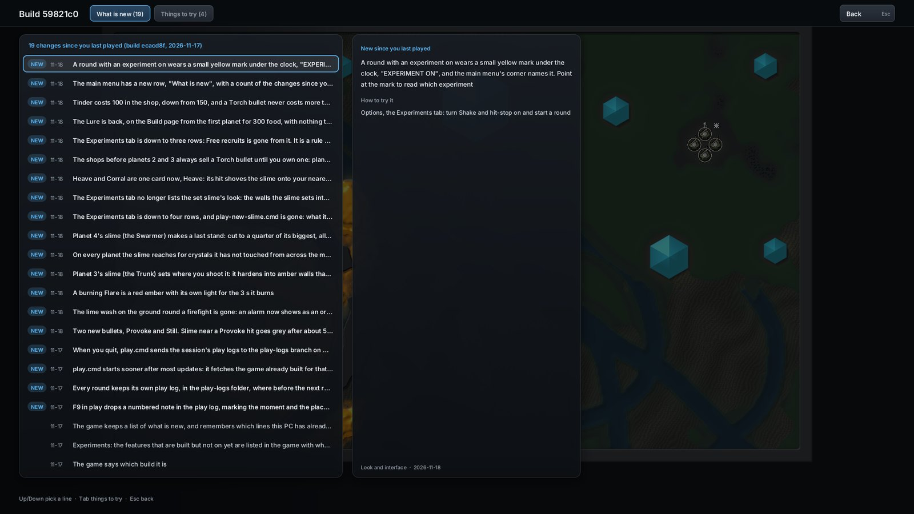
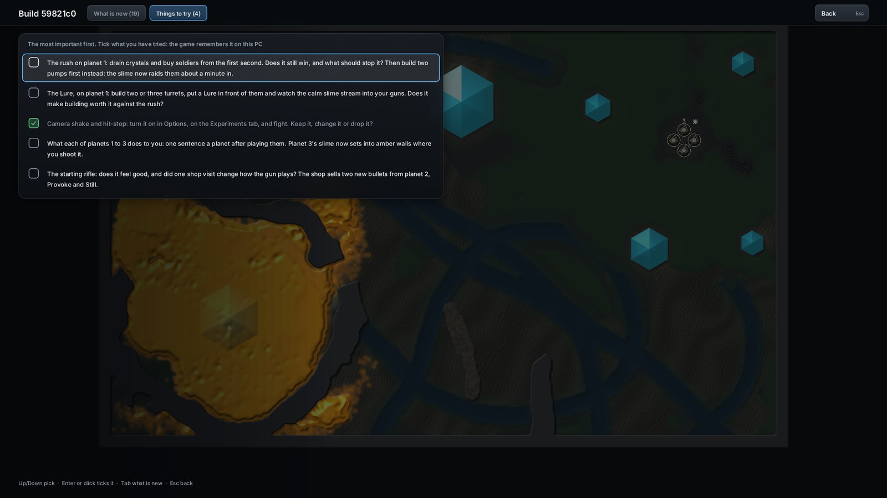
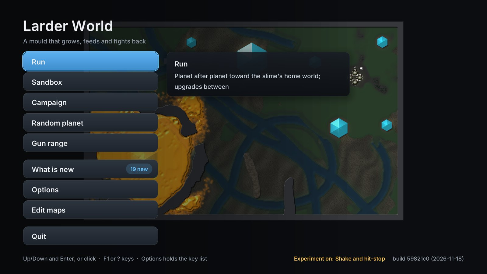
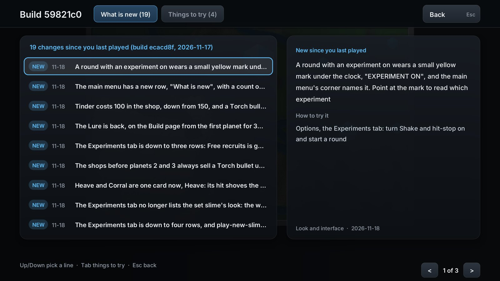
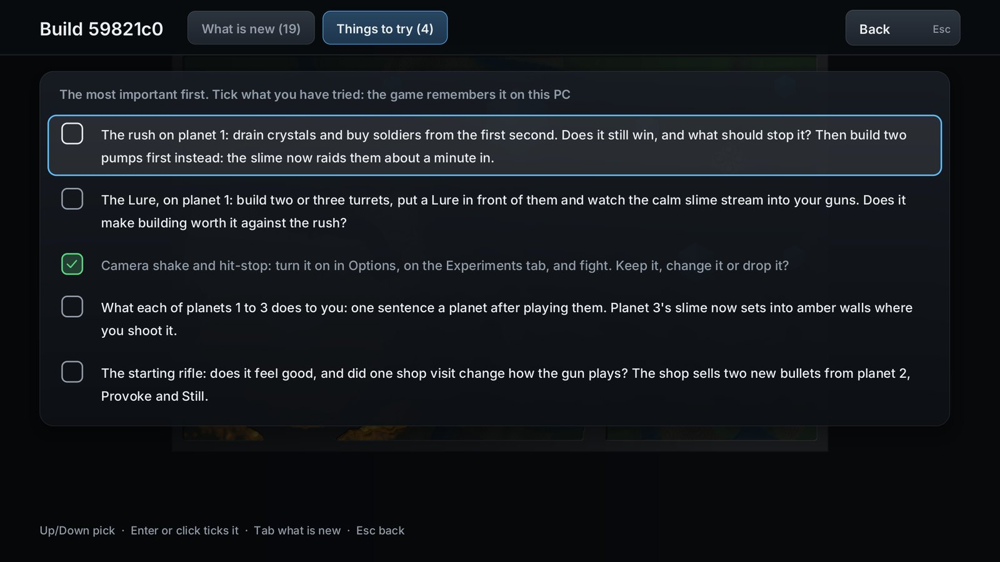
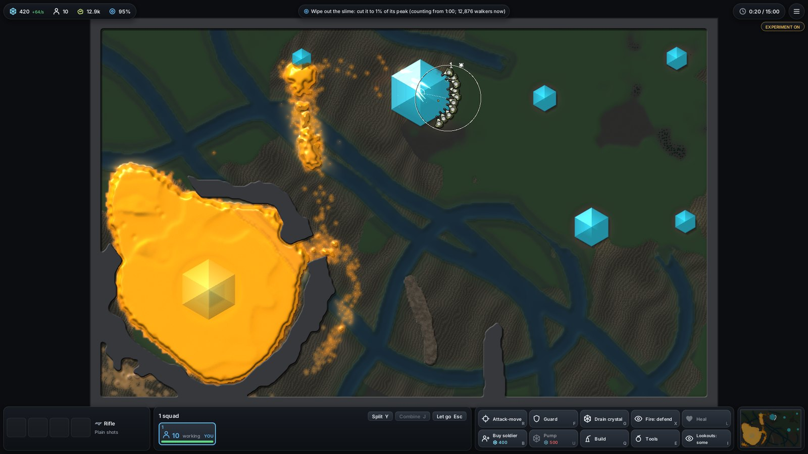
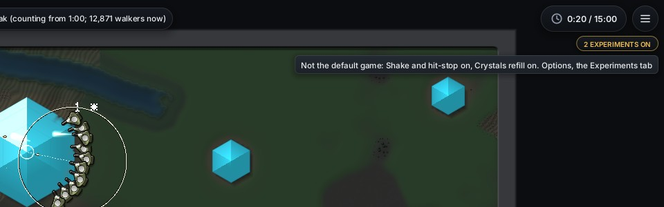

<title>Build Pages</title>
<meta name="claude:viewport-fit-sides" content="cover">
<link rel="stylesheet" href="https://fonts.googleapis.com/css2?family=Bricolage+Grotesque:opsz,wght@12..96,600;12..96,750&family=Source+Sans+3:wght@400;600&family=JetBrains+Mono:wght@400&display=swap">
<style>
/* Layout: one reading column; the menu's pages at 100% then at 200%, each picture full width or in pairs (stacked on a phone), what it holds under each; then play */
:root{
  --bg:#f3f2ec; --panel:#e8e6dc; --fg:#1d211c; --muted:#5b6157;
  --accent:#b0702a; --soft:#f1e3cf; --line:#cfccbf;
  --display:"Bricolage Grotesque", "Segoe UI", system-ui, sans-serif;
  --body:"Source Sans 3", "Segoe UI", system-ui, sans-serif;
  --mono:"JetBrains Mono", ui-monospace, Consolas, monospace;
}
@media (prefers-color-scheme: dark){:root:not([data-theme="light"]){
  --bg:#16140f; --panel:#221f18; --fg:#ebe7dd; --muted:#a39d8e;
  --accent:#e0a35a; --soft:#33291b; --line:#3a3428; color-scheme:dark}}
:root[data-theme="dark"]{
  --bg:#16140f; --panel:#221f18; --fg:#ebe7dd; --muted:#a39d8e;
  --accent:#e0a35a; --soft:#33291b; --line:#3a3428; color-scheme:dark}
body{background:var(--bg);color:var(--fg);font:17px/1.55 var(--body);margin:0;
  padding-left:max(16px,env(safe-area-inset-left,0px));padding-right:max(16px,env(safe-area-inset-right,0px));padding-block:28px 64px}
main{max-width:1180px;margin:0 auto;display:flex;flex-direction:column;gap:30px}
h1,h2,h3{font-family:var(--display);text-wrap:balance;line-height:1.15;margin:0}
h1{font-size:2.3rem;font-weight:750}
h2{font-size:1.45rem;font-weight:750;border-top:2px solid var(--accent);padding-top:14px}
h3{font-size:1.08rem;font-weight:600}
p{margin:0}
section{display:flex;flex-direction:column;gap:14px}
.lede{color:var(--muted);font-size:1.02rem;max-width:760px}
.eyebrow{font:12px/1 var(--mono);letter-spacing:.08em;text-transform:uppercase;color:var(--accent)}
.prose{max-width:760px}
code{font:0.86em var(--mono);background:var(--panel);padding:1px 4px;border-radius:3px}
.grid{display:grid;grid-template-columns:repeat(2,minmax(0,1fr));gap:16px}
@media (max-width:720px){.grid{grid-template-columns:minmax(0,1fr)}}
figure{margin:0;display:flex;flex-direction:column;gap:6px;min-width:0}
figure a{display:block}
figure img{width:100%;height:auto;display:block;border-radius:6px;border:1px solid var(--line);background:#000}
figcaption{display:flex;align-items:baseline;gap:10px;flex-wrap:wrap;font-size:.92rem;color:var(--muted)}
.side{font:750 1.05rem/1.2 var(--display);color:var(--fg)}
.counts{font:13px/1.4 var(--mono);color:var(--fg);font-variant-numeric:tabular-nums}
.note{background:var(--soft);border-radius:8px;padding:16px 18px;max-width:760px;display:flex;flex-direction:column;gap:8px}
ul{margin:0;padding-left:1.2em;display:flex;flex-direction:column;gap:8px;max-width:760px}
footer{font-size:.85rem;color:var(--muted);max-width:760px}
</style>
<main>
<header style="display:flex;flex-direction:column;gap:10px">
  <span class="eyebrow">Larder World · Look D, menus and screens · 2026-11-18</span>
  <h1>The game tells you what a build holds</h1>
  <p class="lede">The main menu now has a "What is new" row with a count of the changes since you last played on this PC. It opens a page named for the build: every change with the new ones marked, and the things to try with ticks the game remembers. The build is named in the menu's corner, and when an experiment is on, the corner and a small mark in play say so. The pictures are one PC whose last round was on the 11-17 build. Click a picture for full size.</p>
</header>

<section>
  <h2>At 100%</h2>
  <figure><a href="img/main.jpg"></a><figcaption><span class="side">Main menu</span><span class="counts">19 new since build ecacd8f · 4 of 5 things to try not ticked · build named bottom right</span></figcaption></figure>
  <div class="grid">
    <figure><a href="img/news.jpg"></a><figcaption><span class="side">What is new</span><span class="counts">19 NEW · 3 seen · one page</span></figcaption></figure>
    <figure><a href="img/try.jpg"></a><figcaption><span class="side">Things to try</span><span class="counts">5 lines · 1 ticked</span></figcaption></figure>
  </div>
</section>

<section>
  <h2>At 200%, with camera shake on</h2>
  <p class="prose">The largest text size on a 1080-line screen. Nine rows on the main page did not fit at full height, so the rows give up a few units each rather than scroll.</p>
  <figure><a href="img/main200.jpg"></a><figcaption><span class="side">Main menu</span><span class="counts">9 rows, 34 to 40 units each · "Experiment on: Shake and hit-stop" beside the build</span></figcaption></figure>
  <div class="grid">
    <figure><a href="img/news200.jpg"></a><figcaption><span class="side">What is new</span><span class="counts">9 rows a page · page 1 of 3</span></figcaption></figure>
    <figure><a href="img/try200.jpg"></a><figcaption><span class="side">Things to try</span><span class="counts">5 lines · one page</span></figcaption></figure>
  </div>
</section>

<section>
  <h2>In play</h2>
  <p class="prose">With any experiment on, a small yellow mark sits under the clock. Point at it to read which. The default game shows nothing there.</p>
  <figure><a href="img/play.jpg"></a><figcaption><span class="side">Shake and hit-stop on</span><span class="counts">planet 1 · 0:20 · "EXPERIMENT ON" under the clock</span></figcaption></figure>
  <figure><a href="img/mark.jpg"></a><figcaption><span class="side">Two on, the cursor on the mark</span><span class="counts">"2 EXPERIMENTS ON" · the tip names Shake and hit-stop and Crystals refill</span></figcaption></figure>
</section>

<section>
  <h2>What to look for</h2>
  <ul>
    <li><strong>NEW means new since you last played here,</strong> not since you last opened the page. A line is marked seen when a round starts.</li>
    <li><strong>The pane on the right</strong> tells the line under the cursor in full, with how to try it and which part of the team made it.</li>
    <li><strong>A tick stays on this PC.</strong> Click a thing to try, or pick it and press Enter. Tab swaps the two lists.</li>
    <li><strong>Yellow means not the default game.</strong> The same yellow names the experiment in the menu's corner and marks a round in play.</li>
  </ul>
  <div class="note">
    <h3>On your PC</h3>
    <p>The corner reads "build" and a number there. In these pictures it reads a commit, because the cloud copy of the code has no history to count.</p>
  </div>
</section>

<footer>Pictures from the software renderer at 1920 x 1080, planet 1, run seed 1. Source and scripts: <code>Reports/build-pages-2026-11-18/</code> in the repo.</footer>
</main>
